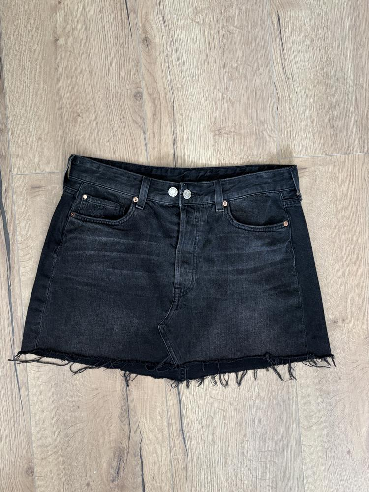

Photograph a garment and its care label. The details are checked by you, saved, and then written to a tag at the tagging station.
1 Photo of the garment
Lay it flat and fill the frame, so the background shows as little as possible.

2 Photo of the care label
Flatten the label and get close, so the fibre percentages are sharp.
Analysing
Starting…
3 Check the details
Correct anything that's wrong before saving.
4 Tap a blank tag on the station
Hold a blank hang tag on the tagging station's reader. This page updates when the tag has been written.
Record
What will be written to the tag
Leaving this page doesn't cancel the garment: the station writes saved garments in order, oldest first.
Tag written ✓
Attach the tag to the garment.
Tag ID